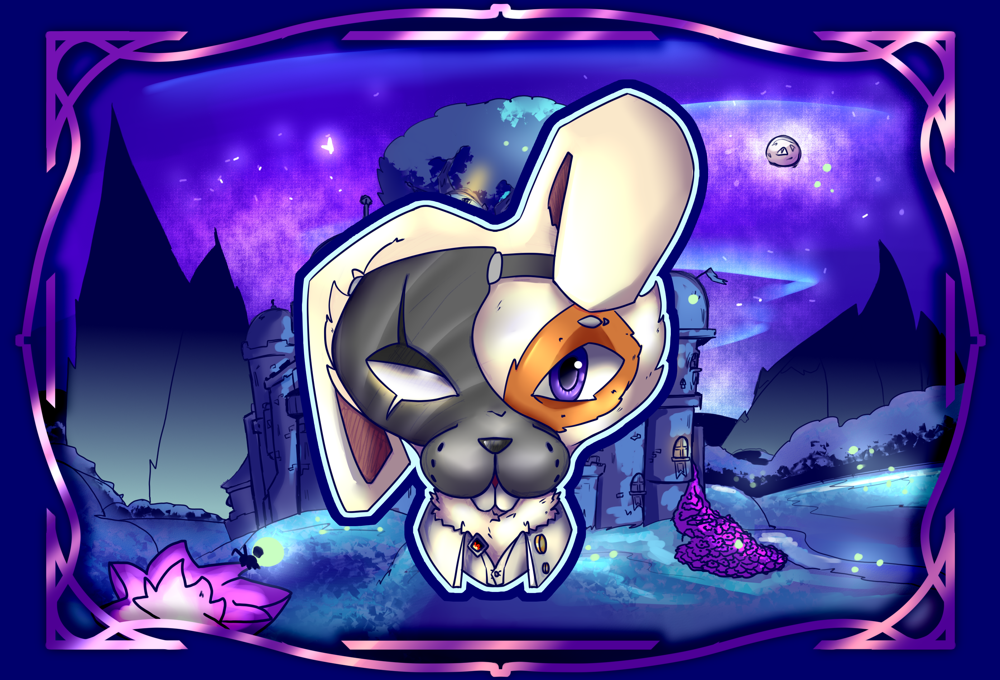
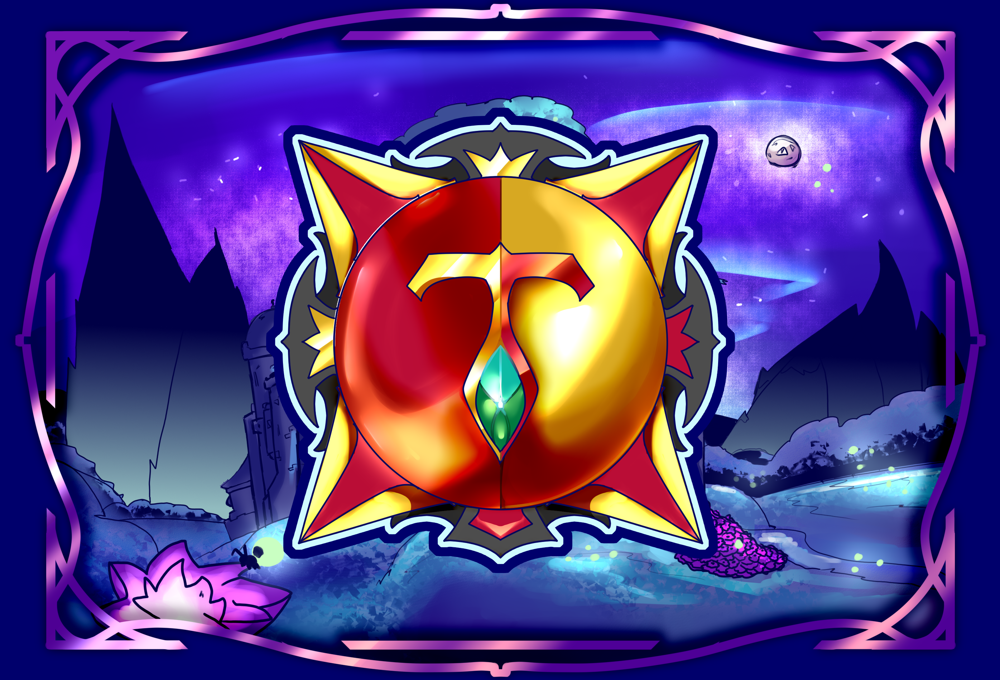
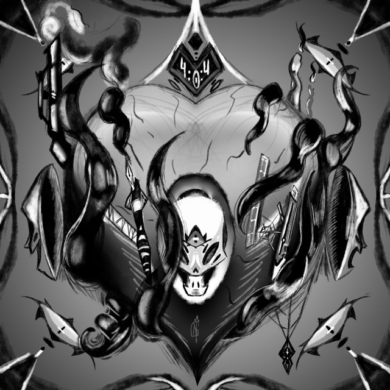
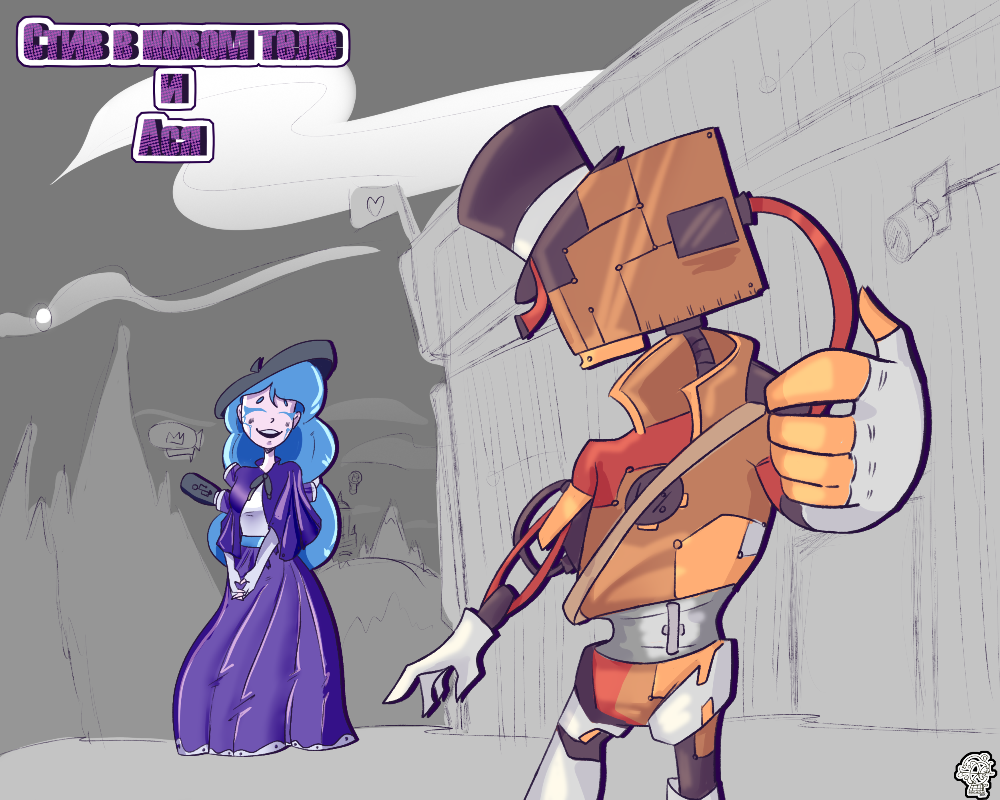
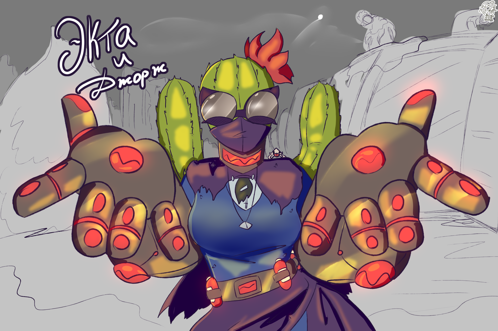
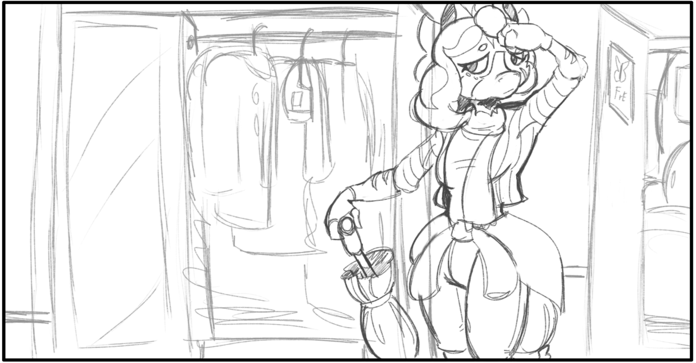
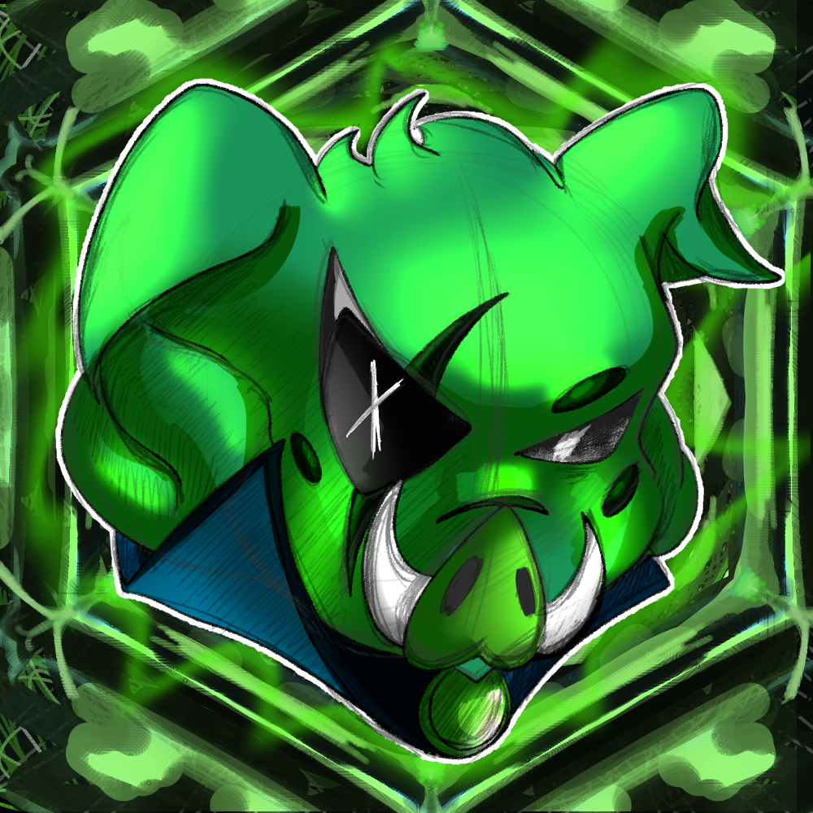
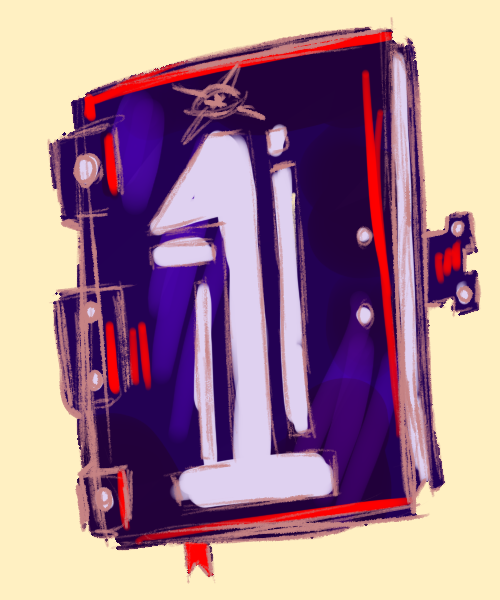

Медиа-проект
The Pidjer’s Club
Обзоры и разборы игр, фильмов, сериалов и аниме. Пиджи делится своими настоящими впечатлениями.
Скоро откроется →Взгляни на это
Все созданные проекты от автора. Архивные, актуальные, в процессе идеи.
Сейчас живут
То, что развивается, обновляется или уже может встречать зрителя.

Медиа-проект
Обзоры и разборы игр, фильмов, сериалов и аниме. Пиджи делится своими настоящими впечатлениями.
Скоро откроется →
Архив аномалий
Аномалии, архивы, документы. Группа интузиастов пытается открыть скрытое и предотвратить возможный конец.
Скоро откроется →Будущие проекты
Проекты, которые уже существуют в планах: идеи, черновики, зарисовки и будущие отдельные миры.

Визуальная новелла
Цикличная история с выбором героя, комнатами, достижениями, монстрами и странным послевкусием.
В разработке →
Мир/ история
Когда-то давно Телефоны и Компьютеры жили в мире и согласии... Но всему хорошему рано или поздно приходит конец
В разработке →
Мир / история
Мир где вспыхнул новый вирус - изменяющий ДНК носителя. Свой мир, персонажи, трагедия.
В разработке →
Мир / история
Мрачные и странные истории, что сплелись нитями судьбы. Что ждет наших Пони-братьями в этом страшном мире...
В разработке →Архив
Старые, замороженные или завершённые проекты. Некоторые из них объединились с другими историями или стали основой для новых идей.

Архив
Игровой проект с процедурными подземельями, сражениями, предметами, сундуками и развитием персонажа.
Заморожено →
Архив
Мысли, заметки и путь Странника в измерении Кошмара. Более страшная и скрытая сторона вселенной.
Объединено →